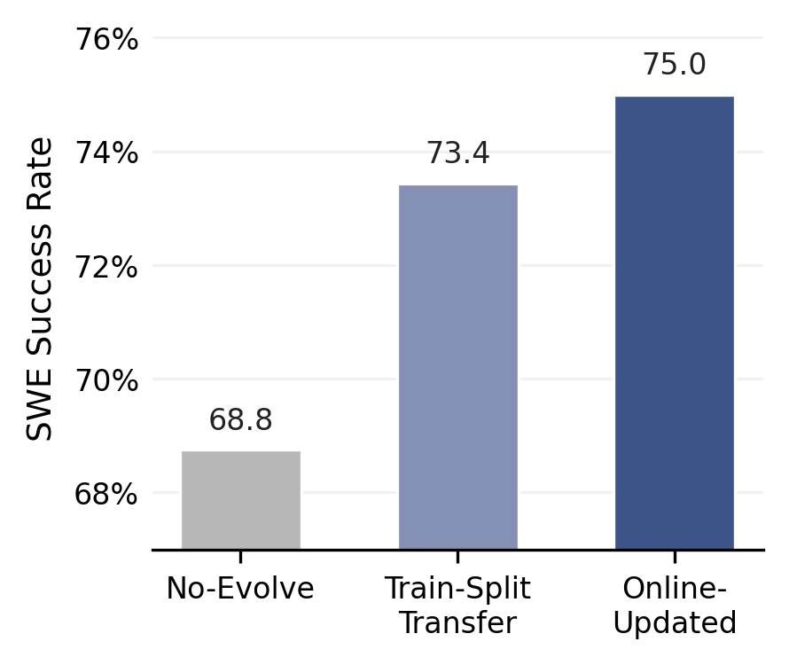

After a failed task, should an agent carry the whole log into its next assignment or extract a check it can apply directly? Evo-Harness calls this step context-to-harness skill compilation. After execution, the solver extracts candidate lessons from failed runs. A separate process decides which lessons to add, merge, revise, or skip. The model weights stay fixed as the external skill library changes across batches. Paper v2, Tianxin Wei et al.
1. Understanding the Topic: What Should a Failed Run Leave Behind?
Suppose a data analysis agent produces a summary table and leaves out one group. The original log helps diagnose this instance, but the next assignment may have different files, fields, and objectives. A reusable check can record the trigger and action: when a task calls for group-level results, verify that each required group appears in the output before submitting it.
The difficult part is choosing the scope. A missing group could result from data loading, the group definition, or output formatting. A rule derived from one local mistake may add unnecessary work elsewhere. The relevant test is whether lessons from earlier assignments help with subsequent tasks.
2. Related Work: From Reflection to Skill-Library Management
| Work | How it preserves experience | Connection to this paper |
|---|---|---|
| Reflexion | Turns task feedback into verbal reflections for future attempts | Evo-Harness also reflects in text and then curates the resulting candidate lessons |
| Agent Workflow Memory | Extracts reusable workflows and retrieves them by task | Evo-Harness maintains general patterns and topic procedures separately and compares against AWM under the same evaluation protocol |
| Gan Jiang | Revises diffraction skills using execution and physical diagnostics, then evaluates frozen versions | Gan Jiang uses domain-specific refinement tools. Evo-Harness uses general agent tasks to study skill scope, transfer, and feedback |
3. Research Questions: How Does Learning Change the Next Batch?
Section 4 asks four questions. Can a fixed solver improve by updating its harness? How much do general and topic guidance contribute? Can skills learned on a training split transfer across tasks and models? How do environmental feedback and model self-judgment affect updates?
Here a harness is a budgeted external collection of behavioral guidance that the agent retrieves and inserts into its prompt. The experiments use natural-language skills. Compilation means turning noisy records into concise rules with conditions for use. Sections 3–4
4. Understanding the Method: Solve, Reflect, Compile, and Reuse

Step 1. Retrieve current skills and solve the batch. Relevant entries are injected before execution, which produces an instruction, trajectory, outcome, and available feedback. The default batch contains 16 tasks. The current harness serves the batch, and updates guide later batches. Appendix F reports that Claude Sonnet 4.5 selects the guidance. The general library and each topic are capped at 5 skills each. Section 3.1 and Appendix F
Step 2. Reflect on failures to propose lessons. After failure or negative feedback, the solver extracts a lesson, trigger, supporting evidence, and scope hint from the execution context. Reflection focuses on the current trajectory. Overlap and conflicts with existing guidance are handled in the next stage. In the table example, an external check that detects an omitted group can ground the proposed validation step. Section 3.2
Step 3. Curate candidates and update the harness. The evolver reads candidate lessons and existing guidance, then adds, merges, revises, or skips entries. Patterns spanning tasks enter the general library. Procedures tied to an interface or local rule stay within a topic. The solver retains its original weights. Separating the solver, evolver, and feedback source makes them easier to compare experimentally. Sections 3.2–3.4
5. Experimental Design and Results: How Much Does It Help?
Main Evaluation: Success Rates Across Five Benchmarks
Claude Opus 4.6 is the default solver and evolver. The authors compare No Evolve with AWM, Dynamic Cheatsheet, Evo-Memory, ACE, XSkill, and Evo-Harness under the same splits and evaluation protocol. Benchmarks evaluate outcomes through tests, environment states, or rubric criteria. The table reports success rates from Table 1 and task counts from Appendix Table 5. Sections 4.1–4.2 and Appendix A
| Benchmark | Tasks | No Evolve | Strongest prior method, XSkill | Evo-Harness |
|---|---|---|---|---|
| CL-Bench | 1,899 | 29.54% | 31.44% | 34.02% |
| TerminalBench-2 | 89 | 62.92% | 66.29% | 73.03% |
| SWE-bench Lite | 300 | 63.67% | 64.67% | 67.00% |
| τ-bench | 165 | 72.73% | 73.94% | 76.97% |
| WebArena-Infinity | 80 | 72.50% | 73.75% | 76.25% |
Gains over No Evolve range from 3.33 to 10.11 percentage points, with the largest gap on TerminalBench-2. On WebArena-Infinity, 3.75 points across 80 tasks correspond to 3 additional passes. Each benchmark uses its own success criterion. Paper Table 1
Supporting Evaluation: Two Forms of Transfer

The SWE-bench Lite transfer experiment uses Opus 4.7 as the solver and Sonnet 4.5 to evolve skills. No Evolve scores 68.8%. Skills evolved on the training split and used on the test split reach 73.4%. Updating on earlier tasks in the test stream reaches 75.0%. The first comparison tests transfer of train-derived guidance, while the second measures adaptation with earlier test-task feedback. In a separate pairing experiment with Sonnet 4.5 as the solver, both evolution settings score below its own no-evolution control. The ability to apply guidance matters alongside the guidance itself. Section 4.5 and Figures 5–6
Ablations: General Guidance, Topic Procedures, and Feedback
In Table 3, topic-only guidance reaches 33.70% on CL-Bench, close to the full system's 34.02%. General-only guidance reaches 66.67% on SWE-bench Lite, close to 67.00% for the full system. The useful scope varies across tasks. Table 3
Table 4 varies feedback used for skill updates. With model self-judgment alone, CL-Bench falls from 29.54% to 27.96%, and SWE-bench Lite from 63.67% to 61.67%. External pass-or-fail feedback yields 29.86% and 67.33%, respectively. Detailed diagnostics yield 34.02% and 67.00%. Richer feedback helps on CL-Bench, while minimal and detailed feedback give similar scores on SWE-bench Lite. Table 4
6. Our Reflections
Topic Reflection: What Is This Field Studying?
The paper turns remembering failures into two inspectable decisions: what lesson to extract and where in the guidance it belongs. Explicit triggers and checks make it possible to investigate whether an agent actually followed a rule and to trace a faulty instruction back to the relevant update.
Limitation Reflection: What Remains Unresolved?
The main experiments use a single agent in text and tool environments. Independent feedback may be slower or harder to obtain in actual research. Online scores can depend on task order, batch size, and early feedback. Overall pass rates compare configurations, while attributing a gain to a skill requires tracking what was injected and how actions changed. The paper leaves executable skills and multi-agent systems outside its evaluation. Limitations
Solution Reflection: What Directions Could Address These Issues?
Repeat experiments on several task orders and report early and late success rates, errors following skill updates, and additional model cost. Preserve both frozen transfer and online adaptation conditions, and record each skill injection. In data analysis, independent checks can report missing groups, ignored parameters, or inconsistent output files. Removing one skill at a time could help identify which check produces a gain.
Figures are from Evo-Harness v2 by Wei et al., reproduced under CC BY 4.0.